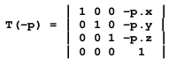
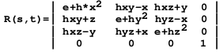
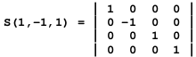

Planare Spiegelungen mit Stencil Buffers
Mehrfach gespiegelt
Mit einer 3D-Karte und OpenGL können Sie Ihre 3D-Szenen in planaren Spiegeln wiedergeben. Mit der Stencil-Buffer-Technik stellen Sie Ihr Werk perspektivisch korrekt dar.
Carsten Dachsbacher
Um Spiegelungen zu programmieren, verwenden Sie OpenGL-Erweiterungen fürs Environment Mapping (sphärisch, parabolisch oder kubisch). Dabei wird die umgebende Szene, die sich in einem Objekt spiegeln soll, in einer Textur gespeichert. Diese Textur können Sie statisch oder dynamisch erzeugen – abhängig vom Einsatzgebiet und davon, was sich im Spiegelbild befinden soll. Bei einem gespiegelten Himmel setzen Sie eine statische Texture Map ein, animierte Objekte auf einer Oberfläche spiegeln Sie mit dynamischen Texture Maps.
In dieser Ausgabe lernen Sie eine Technik kennen, mit der Sie planare (ebene) Spiegel in einer 3D-Szene darstellen können. Die Darstellung der Spiegelungen wird perspektivisch korrekt sein und nicht den Umweg über eine Textur gehen. Das bedeutet, die Rendering-Auflösung der Spiegelungen hat die gleiche Qualität wie die direkt gerenderte 3D-Szene.
Für den Spiegelungseffekt müssen Sie die 3D-Szene zweimal rendern. Für jeden weiteren Spiegel in der 3D-Szene brauchen Sie einen zusätzlichen Renderpass.
Im ersten Renderpass zeichnen Sie die gespiegelte Szene, im zweiten die normale Ansicht der 3D-Szene. Um die Spiegelung nicht zu überschreiben, verwenden Sie das so genannte Stencil Buffering (vgl. Bild oben).
Das Bild zeigt eine 3D-Szene, den Betrachter und eine spiegelnde (zunächst unendlich große) Ebene. Das Spiegelbild, das der Betrachter auf dem Spiegel sehen würde, entspricht dem, das der Betrachter sehen würde, wenn er von der gespiegelten Betrachter-Position durch den Spiegel hindurch blickt.
Jetzt wird die 3D-Szene an der Ebene gespiegelt und von der normalen Betrachterposition aus durch den Spiegel gesehen (siehe Bild 2). Beide Varianten sind vom Ergebnis her identisch. Wir entscheiden uns hier für die zweite Methode, da Sie diese mit OpenGL anschaulicher und einfacher programmieren können.
Stencil Buffers
Sie verwenden den Stencil Buffer, ähnlich wie den Z-Buffer, dazu, das Rendering auf Pixelbasis (also für einzelne Pixel) zu steuern. Das bedeutet, Sie gestatten oder verbieten es, einen Pixel zu setzen. Das erreichen Sie dadurch, dass Sie zusätzlich zum Frame- oder Color-Buffer, in dem das Bild gerendert wird, und dem Z-Buffer, der die Tiefeninformation speichert, einen Stencil Buffer zur Verfügung stellen. Dieser hat die gleiche Auflösung wie das endgültige Bild. Die Bittiefe des Stencil Buffer variiert je nach Hardware und Anwendung (ein Bit oder acht Bit). Sie brauchen keine speziellen OpenGL-Extensions für den Stencil Buffer, den fast jede 3D-Hardware zur Verfügung stellt.
Sie können mit Ihrem Programm den Stencil Buffer löschen und beschreiben. Zunächst müssen Sie OpenGL mitteilen, dass Sie einen verwenden möchten. Dazu beschreiben Sie das gewünschten Pixelformat, während Sie den Rendercontext erzeugen. Da sich die Initialisierung sonst nicht von der herkömmlichen unterscheidet, müssen Sie sich nicht um die entsprechenden Codefragmente (im Sourcecode zu dieser Ausgabe) kümmern.
Um den Stencil Buffer zu löschen wollen, arbeiten Sie mit dem Befehl
glClear(GL_STENCIL_BUFFER_BIT);
Im folgenden Stencil-Test beschreiben Sie den Stencil Buffer mit Rendering-Optionen (etwa für Polygone):
glEnable(GL_STENCIL_TEST);
OpenGL setzt jeden Pixel mit einer Vergleichsoperation, die Sie mit dem glStencilFunc(...)-Befehl festlegen. Der erste Parameter gibt die Vergleichsfunktion an. Diese legt fest, ob der Wert im Stencil Buffer kleiner (gleich), größer (gleich) oder gleich einem Referenzwert (der zweite Parameter) sein muss. Sie können auch festlegen, dass immer ein positives oder negatives Ergebnis geliefert wird, wenn Sie den Stencil Buffer nur mit Werten füllen wollen. Mit dem dritten Parameter lässt sich eine Bitmaske übergeben. Beide Werte, aus dem Stencil Buffer und dem Referenzwert, unterziehen Sie vor dem Vergleich einem bitweisen AND-Verfahren. Mit der OpenGL-Funktion glStencilOp(...) bestimmen Sie, was nach dem Stencil-Test – abhängig vom Ergebnis – passiert: ob ein Pixel gesetzt wird oder nicht und ob der Stencil-Buffer-Wert verändert wird oder nicht. Zunächst unterscheiden Sie drei Fälle, bei denen Sie auch das Ergebnis des Z-Buffer-Tests heranziehen:
• Der Stencil-Buffer-Test liefert ein negatives Ergebnis.
• Der Stencil-Buffer-Test liefert ein positives Ergebnis, aber der Z-Buffer-Test schlägt fehl.
• Beide Tests liefern ein positives Resultat. Beim Z-Buffer-Test kann das auch auftreten, wenn dieser deaktiviert ist.
Sie reagieren auf die Ergebnisse mit unterschiedlichen Operationen. Für jeden dieser drei Fälle geben Sie beim glStencilOp(...)-Befehl an, welche Operation durchgeführt werden soll:
• Sie lassen den Stencil-Buffer-Wert unverändert.
• Sie setzen den Wert auf Null.
• Sie gleichen den Wert mit dem Referenz-Wert der glStencilFunc(...)-Funktion ab, setzen, erhöhen, erniedrigen oder invertieren bitweise.
Die flexible Steuerung der Stencil Buffers lässt viele Spezialeffekte wie Outlining, Constructive Solid Geometry und Spiegelungen zu. Die beiden Tabellen (unten und auf Seite 192) fassen die Stencil-Funktionen und -Operationen zusammen
Spiegelungen Schritt für Schritt
Erarbeiten Sie sich die Verfahren zur Spiegelung und implementieren Sie sie in OpenGL. Im ersten Renderpass setzen Sie mit dem Befehl glLoadIdentity() die Modelview und die Projection Matrix auf die Identitätsabbildung. Mit den glFrustum(...)- und gluLookAt(...)-Befehlen oder mit gluPerspective(...) wählen Sie in der Projection-Matrix Betrachterposition und -blickrichtung.
Sichern Sie die aktuellen OpenGL-Matrizen, da Sie sie später für den zweiten Renderpass brauchen. Am besten speichern Sie sie mit glPushMatrix() auf dem Matrixstack. Spiegeln Sie die 3D-Szene an der Ebene, in der sich der Spiegel befindet. Dazu multiplizieren Sie die Spiegelungsmatrix mit glMultMatrix() und mit der Modelview-Matrix. Zeichnen Sie die gesamte 3D-Szene. Die Szene ist so zu sehen, wie sie als Spiegelbild erscheinen würde – nur nimmt der Spiegel für gewöhnlich nicht das gesamte Blickfeld ein! An dieser Stelle setzen Sie den Stencil Buffer ein. Betrachten Sie die Situation, bevor Sie die Spiegelungsmatrix anwenden. Hier ist der Betrachter an seiner normalen Position und Blickrichtung. Jetzt können Sie den Spiegel aus der Sicht des Betrachters in den Stencil Buffer zeichnen, ohne den Z-Buffer oder Colorbuffer zu beeinflussen. Wir gehen davon aus, dass der Spiegel an seiner gewünschten Stelle platziert ist:
// Z-Buffer nicht ändern oder vergleichen
glDisable(GL_DEPTH_TEST);
// Colorbuffer nicht beschreiben
glColorMask(0, 0, 0, 0);
// Stencil Test:immer positiv, 1
glEnable(GL_STENCIL_TEST);
glStencilFunc(GL_ALWAYS, 1, 1);
// Referenzwert schreiben, immer
glStencilOp(GL_KEEP, GL_KEEP, GL_REPLACE);
// Spiegel zeichnen
drawMirror();
// Color + Z Buffer anschalten
glColorMask(1, 1, 1, 1);
glEnable(GL_DEPTH_TEST);
Beim Rendern der gespiegelten Szene legen Sie fest, dass nur dort Pixel gesetzt werden, wo der Betrachter den Spiegel und das Spiegelbild der 3D-Szene sieht. Dazu verwenden Sie die folgenden Befehle, wobei Ihnen OpenGL die Arbeit abnimmt:
// Test positiv, wenn Stencil Buffer Wert == 1
glStencilFunc(GL_EQUAL, 1, 1);
// Werte nicht verändern
glStencilOp(GL_KEEP, GL_KEEP, GL_KEEP);
//Rendern der gespiegelten Szene
...
Sie müssen beim Rendering der gespiegelten Szene darauf achten, dass Sie auch die Position der Lichtquellen mitspiegeln müssen, um das Spiegelbild korrekt zu beleuchten.
Wenn in Ihrer 3D-Szene 3D-Objekte den Spiegel durchdringen, veranlassen Sie OpenGL, die Polygone dieser Objekte an der Ebene des Spiegels abzuschneiden (clipping). Dazu stellt Ihnen OpenGL die Clip Planes zur Verfügung, die Sie mit folgender Syntax einsetzen können:
// Ebenengleichung
double eq[4] = { 0.0, -1.0, 0.0, 0.0 };
// und aktivieren:
glEnable(GL_CLIP_PLANE0);
glClipPlane(GL_CLIP_PLANE0, eq);
Mit der Ebenengleichung bestimmen Sie einen Halbraum. Alle Vertices, deren Skalarprodukt (in Eye Coordinates) mit dem eq-Vektor einen Wert größer oder gleich Null ergibt, werden als innerhalb des gewünschten Halbraums, sonst außerhalb gewertet.
Jetzt können Sie die 3D-Szene vom Betrachter aus zeichnen. Beginnen Sie dabei mit dem Spiegel, da sonst das Spiegelbild womöglich überschrieben wird. Den Spiegel sollten Sie nicht opak (Gegenteil von transparent) zeichnen, da sonst das Spiegelbild überdeckt wird. Zeichnen Sie ihn entweder mit Alphablending teilweise transparent oder nur in den Z-Buffer, wenn der Spiegel perfekt aussehen soll. Wenn Sie einen Spiegel mit besser und schlechter spiegelnden Bereichen darstellen wollen, erreichen Sie das mit Alphablending und einer geeigneten Textur. Zusammengefasst sieht der zweite Renderpass so aus:
// kein Userdefined Clipping und Stencil Test mehr
glDisable(GL_CLIP_PLANE0);
glDisable(GL_STENCIL_TEST);
// teilweise transparenter, nicht perfekter Spiegel
glEnable(GL_BLEND);
glColor4f(0.9f, 0.9f, 1.0f, 0.75f);
glBlendFunc(GL_SRC_ALPHA, GL_ONE_MINUS_SRC_ALPHA);
drawMirror();
glDisable(GL_BLEND);
// und den Rest der 3D-Szene
drawScene();
Die Spiegelungsabbildung
Der Spiegel liegt zunächst in einer Koordinatenebene, etwa in der x/z-Ebene. Dann können Sie eine Spiegelung einfach beschreiben, indem Sie die y-Koordinaten jedes Punktes negieren und die x- und z-Koordinate unverändert lassen. Mit dem OpenGL-Befehl
glScalef(1.0, -1.0, 1.0);
skalieren Sie die Darstellung. Sie können diese Methode auch für beliebige Ebenen (also beliebig positionierte Spiegel) verwenden. Mit der Spiegelungsmatrix können Sie einen Punkt an der Ebene spiegeln.
Die Matrix setzt sich aus einzelnen Transformationen zusammen. Verschieben Sie die Ebene, die durch einen Punkt p und die Normalen n bestimmt wird, so, dass sie durch den Ursprung verläuft. Diese Transformation beschreiben Sie durch eine Translationsmatrix (Verschiebungsmatrix) T(-p): 
Drehen Sie die Ebene so, dass Sie mit der x/z-Ebene identisch ist, die Normale also mit der gedrehten Ebene übereinstimmt (0, 1, 0). Die Matrix, die diese Transformation vornimmt, bezeichnen Sie mit R(n, (0, 1, 0)). Sie können sie mit Hilfe von Quaternionen herleiten. Wir präsentieren Ihnen stattdessen das optimierte Ergebnis für R(s, t):
v = s x t (Kreuzprodukt)
e = cos(2 * phi) = s * t
(2 * phi: Winkel s und t)
h = (1 - e) / (v * v)
x, y, z sind die Komponenten von v: 
Die Tranformation der Spiegelebene in die x/z-Ebene sieht so aus:
F = R(n, (0, 1, 0)) T(-p)
Die Matrixmultiplikation führt die einzelnen Transformationen in der Reihenfolge von rechts nach links aus. An der transformierten Ebene wird mit der Skalierung (Skalierungsmatrix S(1,-1,1)) die Spiegelung durchgeführt. Anschließend machen Sie die Transformation der Ebene mit der inversen Matrix zu F: F(inv) rückgängig: 
Die Spiegelungsmatrix sieht so aus:
M = F(inv) S(1, -1, 1) F
Einfacher geht es, wenn Sie die OpenGL-Transformationen, die Sie mit dem Spiegel vornehmen, aus einfachen Transformationen wie Rotation und Translation zusammensetzen. Beginnen Sie, indem Sie einen einfachen quadratischen Spiegel definieren, der in der x/z-Ebene liegt:
void drawMirror()
{
glDisable(GL_LIGHTING);
glBegin(GL_QUADS);
glNormal3f(0.0, 1.0, 0.0);
glTexCoord2f(0.0 , 0.0);
glVertex3f(-1.0, 0.0, -1.0);
glTexCoord2f(1.0, 0.0);
glVertex3f(1.0, 0.0, -1.0);
glTexCoord2f(1.0, 1.0);
glVertex3f(2.0, 0.0, 2.0);
glTexCoord2f(0.0, 1.0);
glVertex3f(-1.0, 0.0, 1.0);
glEnd();
}
Nehmen Sie an, Sie wollen den Spiegel durch Verschieben und Drehen in seine gewünschte Position bringen. Die Transformation beschreiben folgende Zeilen:
glRotatef(w, 0, 0, 1);
glTranslatef(x, y, z);
Diese Transformation führen Sie auch aus, bevor Sie den Spiegel in den Stencil Buffer zeichnen. Sichern und restaurieren Sie die Modelview Matrix davor und danach. Beim endgültigen Zeichnen des Spiegels beim zweiten Renderpass verfahren Sie genauso.
Beim ersten Renderpass müssen Sie die Transformationen in der richtigen Reihenfolge ausführen, die analog zur obigen Beschreibung der Matrix M ist. Sie finden die Matrix F, F(inv) und S wieder. Verwenden Sie die folgende Reihenfolge, um die gespiegelte Szene zu zeichnen:
// Stencil Buffer an
glStencilFunc(GL_EQUAL, 1, 1);
glStencilOp(GL_KEEP, GL_KEEP, GL_KEEP);
glEnable(GL_CLIP_PLANE0);
glPushMatrix();
// Transformation
// Matrix F(inv)
glTranslatef(x, y, z);
glRotatef(w, 0, 0, 1);
// hier die Clip-Plane setzen:
glClipPlane(GL_CLIP_PLANE0, eqr);
// Spiegelung an der XZ Ebene: S(1,-1,1)
glScalef(1.0f, -1.0f, 1.0f);
// Matrix F
glRotatef(-w, 0, 0, 1);
glTranslatef(-x, -y, -z);
// Lichtquellen & Co
glLightfv(GL_LIGHT0, GL_POSITION, lightPosition);
// 3D Szene rendern
drawScene();
// fertig !
glPopMatrix();
Wenn Sie mehrere Spiegel einsetzen wollen, müssen Sie einen Stencil Buffer mit einer größeren Bittiefe als einem Bit (wie im Beispielprogramm) verwenden. Dann weisen Sie jedem Spiegel einen Referenz-Stencil-Wert zu. Im Bild unten sehen Sie unser Beispielprogramm in Aktion.